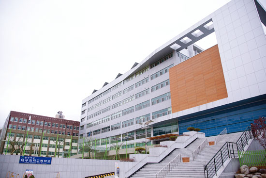
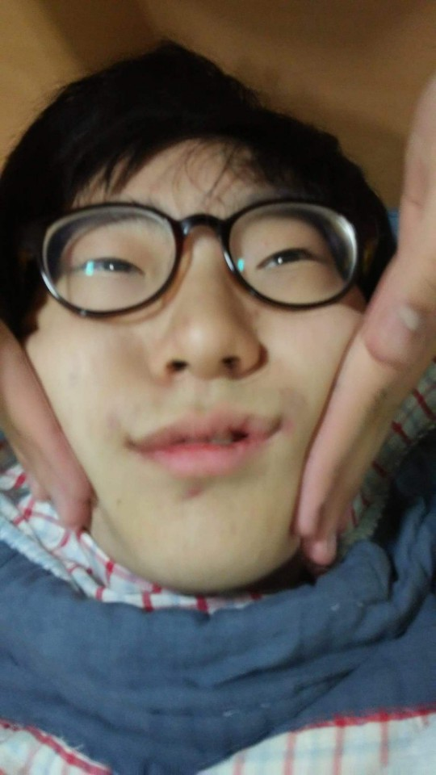

마이크 버튼을 누르고 컴퓨터와 말을 해봐요!
마이크에 말해보세요.
마이크에 대고 말을 하길 바랍니다.
"허용" 버튼을 눌러야 컴퓨터랑 말할 수 있답니다.
"허용" 버튼을 누르지 않았습니다ㅠㅠ
"허용"이 지원되지 않습니다. 변경을 하려면
chrome://settings/contentExceptions#media-stream 을 이용햐 주새요
이 앱은 크롬 브라우저에서 만 작동됩니다!




오른쪽의 마이크 버튼을 누르면 컴퓨터에게 말을 시작할 수 있습니다.
컴퓨터에게 말을 해봐요!
HINT: 동아리 이름과 학교 이름, 자신이 좋아하는 색깔을 말하면 놀라운 것이 일어납니다^^